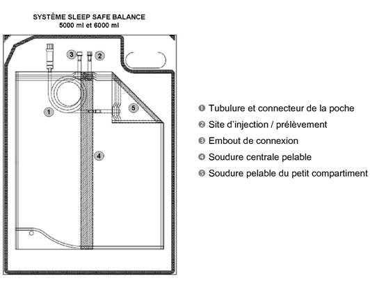
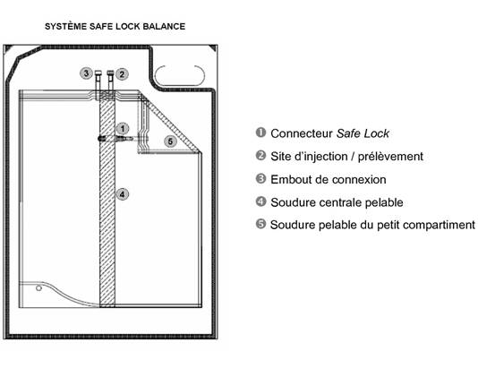

RÉSUMÉ DES CARACTÉRISTIQUES DU PRODUIT
ANSM - Mis à jour le : 08/01/2010
DIALYSE PERITONEALE CONTINUE AMBULATOIRE 4, solution pour dialyse péritonéale
2. COMPOSITION QUALITATIVE ET QUANTITATIVE
DIALYSE PERITONEALE CONTINUE AMBULATOIRE 4, solution pour dialyse péritonéale est présentée en poche bi-compartimentée.
Un compartiment contient la solution alcaline de lactate, l'autre compartiment contient la solution acide à base de glucose et d'électrolytes. Le mélange des deux solutions, après ouverture de la soudure centrale entre les deux compartiments, permet d'obtenir la solution neutre prête à l'emploi.
AVANT RECONSTITUTION
1 litre de solution acide à base de glucose et d'électrolytes contient:
Chlorure de sodium ....................................................................................................................... 11,2790 g
Chlorure de calcium dihydraté .......................................................................................................... 0,5145 g
Chlorure de magnésium hexahydraté ................................................................................................ 0,2033 g
Glucose anhydre (sous forme de glucose monohydraté) ................................................................... 45,4600 g
1 litre de solution alcaline de lactate contient:
Lactate de sodium (sous forme de solution de lactate de sodium) ....................................................... 7,8500 g
APRES RECONSTITUTION
1 litre de solution neutre prête à l'emploi contient:
Chlorure de sodium ......................................................................................................................... 5,6400 g
Lactate de sodium (sous forme de solution de lactate de sodium) ....................................................... 3,9250 g
Chlorure de calcium dihydraté .......................................................................................................... 0,2573 g
Chlorure de magnésium hexahydraté ................................................................................................ 0,1017 g
Glucose anhydre (sous forme de glucose monohydraté) ................................................................... 22,7300 g
|
Sodium: |
134,00 mmol/l |
|
|
Calcium: |
1,75 mmol/l |
|
|
Magnésium: |
0,50 mmol/l |
|
|
Chlorures: |
101,50 mmol/l |
|
|
Lactate: |
35,00 mmol/l |
|
|
Glucose: |
126,10 mmol/l |
|
Osmolarité théorique: 401 mOsm/l
pH: 7,0
Pour la liste complète des excipients, voir rubrique 6.1.
Solution pour dialyse péritonéale.
Poche bi-compartimentée contenant des solutions aqueuses limpides et incolores.
4.1. Indications thérapeutiques
Insuffisance rénale chronique au stade terminal (décompensé) quelle qu'en soit l'origine traitée par dialyse péritonéale.
4.2. Posologie et mode d'administration
Cette solution est exclusivement réservée à la voie intrapéritonéale.
Posologie
La posologie, la fréquence d'administration et le temps de stase sont définis par le médecin traitant.
Sauf indication particulière, utiliser 2000 ml de solution par échange, 4 fois par jour. Après un temps de stase de 2 à 10 heures, la solution est drainée.
La posologie, le volume et le nombre d'échanges doivent être adaptés pour chaque patient.
En cas de douleurs dues à une distension abdominale en début de dialyse péritonéale, le volume par échange doit être temporairement diminué (500 - 1500 ml par échange).
Chez les patients de taille importante et si la fonction rénale résiduelle est perdue, une dose plus importante sera nécessaire. Pour ces patients ou pour des patients pouvant tolérer des volumes plus importants, une dose de 2500 ml - 3000 ml par échange peut être administrée.
Si un cycleur est utilisé pour une dialyse péritonéale continue cyclique ou intermittente, il est recommandé d'utiliser des poches de plus grand volume.
Chez l'enfant, le volume par échange devra être réduit, en fonction de l'âge, de la taille et du poids (30 -40 ml /kg).
Il n'y a pas de recommandations particulières chez le sujet âgé.
Les solutions de dialyse péritonéale avec une forte concentration en glucose (2,3 % ou 4,25 %) seront utilisées lorsque le poids corporel est au-dessus du poids sec désiré. La perte hydrique augmente avec la concentration en glucose de la solution de dialyse péritonéale. Ces solutions doivent être utilisées avec précaution afin de préserver la membrane péritonéale et de prévenir la déshydratation, ainsi que pour garder une charge de glucose aussi faible que possible.
Le traitement doit être réalisé tous les jours en respectant les doses prescrites. La dialyse péritonéale est un traitement à long terme comportant des administrations répétées de solutions.
DIALYSE PERITONEALE CONTINUE AMBULATOIRE 4 contient 22,73 grammes de glucose dans 1000 ml.
Mode et durée d'administration
Pour le système STAY SAFE BALANCE
Réchauffer préalablement la poche de solution à la température du corps. Le réchauffement devra être réalisé au moyen d'un réchauffeur approprié. La durée de réchauffement d'une poche de 2000 ml, avec une température initiale de 22°C, est d'environ 120 minutes.
Des informations supplémentaires peuvent être obtenues dans la notice d'utilisation du réchauffeur. L'utilisation d'un four à micro-ondes n'est pas recommandée à cause des risques de surchauffe.
Les solutions dans les deux compartiments doivent être mélangées avant utilisation.
Pour les instructions concernant l'utilisation, se reporter à la rubrique 6.6.
Selon la prescription du médecin, la solution reste dans la cavité péritonéale pendant 2 à 10 heures (temps d'équilibre) puis est drainée.
En fonction de la pression osmotique désirée, DIALYSE PERITONEALE CONTINUE AMBULATOIRE 4 peut être utilisée alternativement avec une solution de dialyse péritonéale contenant plus de glucose (osmolarité supérieure ou inférieure).
Avant de démarrer un traitement de dialyse péritonéale à domicile, le patient doit avoir été formé, doit pratiquer la technique et doit être considéré comme étant capable d'utiliser la technique. La formation doit être réalisée par une personne qualifiée.
Le médecin doit s'assurer que le patient maîtrise suffisamment la technique de manipulation avant de réaliser son traitement à domicile. En cas de problème ou d'incertitude, le médecin doit être contacté.
La dialyse péritonéale doit être poursuivie aussi longtemps qu'une thérapie de substitution rénale est nécessaire.
Pour cette solution de dialyse péritonéale:
DIALYSE PERITONEALE CONTINUE AMBULATOIRE 4 ne doit pas être utilisée chez des patients présentant une hypokaliémie sévère et une hypercalcémie sévère.
Pour la dialyse péritonéale en général:
La dialyse péritonéale ne doit pas être mise en place en cas de:
· chirurgie abdominale ou lésion abdominale récente, antécédents d'opérations abdominales avec adhérences fibreuses, brûlures abdominales sévères, perforation de l'intestin;
· conditions inflammatoires cutanées étendues au niveau de l'abdomen (dermatite);
· maladies inflammatoires de l'intestin (maladie de Crohn, colite ulcéreuse, diverticulite);
· péritonite;
· fistule abdominale interne ou externe;
· hernie ombilicale, inguinale ou autre hernie abdominale;
· tumeurs intra-abdominales;
· iléus;
· maladies pulmonaires (en particulier pneumonie);
· septicémie;
· acidose lactique;
· hyperlipidémie sévère;
· rares cas d'urémie non curables par dialyse péritonéale;
· cachexie et perte de poids importante, en particulier lorsqu'un apport protéique adéquat n'est pas garanti;
· cas où le patient est incapable physiquement ou mentalement de suivre un traitement par la dialyse péritonéale selon la prescription du médecin.
Si l'un de ces cas survient en cours de dialyse péritonéale, le médecin doit prendre les décisions nécessaires.
4.4. Mises en garde spéciales et précautions d'emploi
Cette solution doit être administrée seulement après évaluation du rapport bénéfice/risque en cas de:
· pertes d'électrolytes dues à des vomissements et/ou diarrhée (l'utilisation temporaire d'une solution de dialyse péritonéale contenant du potassium peut être nécessaire);
· hypercalcémie, par exemple due à l'administration de chélateurs du phosphore contenant du calcium et/ou de la vitamine D (l'utilisation temporaire ou permanente d'une solution de dialyse péritonéale contenant un taux de calcium plus faible doit être envisagée);
· traitement aux digitaliques: un contrôle régulier du taux de potassium sérique est obligatoire. Une hypokaliémie sévère peut nécessiter l'utilisation d'une solution de dialyse péritonéale contenant du potassium, accompagnée d'un régime alimentaire approprié;
· reins polykystiques.
La solution de drainage doit être vérifiée en terme de limpidité et de volume. Un trouble, accompagné ou non de douleurs abdominales, ou une douleur abdominale seule, sont des indices de péritonite.
Une perte de protéines, d'acides aminés et de vitamines hydrosolubles apparaît lors de la dialyse péritonéale. Pour éviter de telles carences, une alimentation adéquate ou une supplémentation doit être assurée.
Les caractéristiques de transfert de la membrane péritonéale peuvent se modifier lors de la dialyse péritonéale à long terme; ces changements sont principalement mis en évidence par une perte d'ultrafiltration. En cas de perte sévère d'ultrafiltration, la dialyse péritonéale doit être arrêtée et remplacée par l'hémodialyse.
Un contrôle régulier des paramètres suivants est recommandé:
· poids corporel afin de détecter précocement une hyperhydratation ou une déshydratation;
· natrémie, kaliémie, calcémie, magnésémie, phosphatémie, équilibre acido-basique, gaz sanguins et protéines sanguines;
· créatininémie et urée sanguine;
· dosage de la parathormone et autres indicateurs du métabolisme osseux;
· glycémie;
· fonction rénale résiduelle afin d'adapter le traitement par dialyse péritonéale.
Sujets âgés
Chez le sujet âgé, l'augmentation de l'incidence des hernies devra être prise en compte avant le démarrage de la dialyse péritonéale.
Durée de vie de la solution prête à l'emploi
La solution prête à l'emploi doit être administrée immédiatement, dans un délai maximal de 24 heures après le mélange (voir aussi la rubrique 6.3).
Instructions concernant la manipulation (voir aussi la rubrique 6.6)
Les poches peuvent parfois être endommagées durant le transport ou le stockage. Cela peut entraîner une contamination microbienne de la solution de dialyse. Il est donc nécessaire de mirer soigneusement chaque poche de solution avant de réaliser la connexion de la poche et avant d'utiliser la solution de dialyse.
N'importe quel dommage, même mineur, au niveau du connecteur, des soudures ou des angles, doit être détecté en raison du risque de contamination.
Les poches endommagées ou contenant une solution trouble ne doivent pas être utilisées.
La solution de dialyse péritonéale ne doit être utilisée que si la poche et les soudures sont intactes.
Les quantités non utilisées doivent être jetées.
Le suremballage doit être retiré juste avant utilisation.
Ne pas infuser avant d'avoir mélangé les deux solutions.
Des mesures aseptiques doivent être prises pendant le changement de poche, afin de réduire le risque d'infection.
Cette solution de dialyse péritonéale ne doit pas être utilisée en perfusion intraveineuse.
4.5. Interactions avec d'autres médicaments et autres formes d'interactions
L'utilisation de cette solution de dialyse péritonéale peut conduire à une perte d'efficacité d'autres médicaments si ceux-ci traversent la membrane péritonéale. Un ajustement du dosage devra être nécessaire.
Une diminution du taux de potassium sérique peut augmenter la fréquence des réactions indésirables liées aux médicaments digitaliques. Les taux de potassium doivent être particulièrement surveillés lors d'un traitement concomitant aux digitaliques.
L'administration concomitante de médicaments contenant du calcium, ainsi que la vitamine D, peut entraîner une hypercalcémie.
L'utilisation de diurétiques peut aider à maintenir la fonction rénale résiduelle, mais peut aussi entraîner des désordres hydro-électrolytiques.
Chez le sujet diabétique, la dose journalière d'insuline ou d'hypoglycémiants oraux doit être adaptée en tenant compte de l'apport en glucose.
Il n'existe pas d'étude sur l'utilisation de la solution DIALYSE PERITONEALE CONTINUE AMBULATOIRE 4 chez l'animal ou chez la femme enceinte.
Des précautions doivent être prises en cas de prescription chez la femme enceinte ou allaitant.
4.7. Effets sur l'aptitude à conduire des véhicules et à utiliser des machines
DIALYSE PERITONEALE CONTINUE AMBULATOIRE 4 n'a aucun ou peu d'effet sur l'aptitude à conduire des véhicules et à utiliser des machines.
DIALYSE PERITONEALE CONTINUE AMBULATOIRE 4 est une solution d'électrolytes dont la composition est proche de celle du sang. De plus, la solution a un pH neutre, similaire au pH physiologique.
Les effets indésirables potentiels peuvent provenir du procédé de dialyse péritonéale ou peuvent être induits par la solution elle-même.
Effets indésirables potentiels entraînés par la solution elle-même
Affections métaboliques et nutritionnels
Hyperglycémie, hyperlipidémie, augmentation du poids corporel due à l'apport continu en glucose dans la solution de dialyse péritonéale.
Affections cardio-vasculaires
Tachycardie, hypotension, hypertension.
Affections respiratoires, thoraciques et médiastinales
Dyspnée.
Affections rénales et urinaires
Déséquilibres électrolytiques, comme une hypokaliémie (très fréquent (> 10 %)), une hypercalcémie liée à une augmentation de l'apport en calcium (par exemple, en cas d'administration de chélateurs du phosphore contenant du calcium).
Troubles généraux
Vertiges, œdèmes, problèmes d'hydratation mis en évidence soit, par une perte rapide de poids (déshydratation), soit par une prise de poids rapide (hyperhydratation).
Une déshydratation sévère peut se produire lors de l'utilisation de solution avec une forte concentration en glucose.
Effets indésirables potentiels liés au mode de traitement par dialyse péritonéale:
Infections et infestations
Péritonite (très fréquent (> 10 %)); infection du site d'émergence du cathéter ou du tunnel (très fréquent (> 10 %)); dans de rares cas, septicémie (≤ 0,01 %).
Affections respiratoires, thoraciques et médiastinales
Dyspnée causée par l'élévation du diaphragme, douleurs scapulaires.
Affections gastro-intestinales
Diarrhée ou constipation, hernies (très fréquent (> 10 %)); distension abdominale et sensation de satiété.
Troubles généraux et affections du site d'administration
Malaise, rougeur, œdème, suppuration, croûtes et douleur au niveau du site d'émergence du cathéter.
Problèmes liés à la technique de dialyse péritonéale
Effluent trouble, difficultés à l'infusion et au drainage de la solution.
Une péritonite est mise en évidence par un effluent de drainage trouble. Des douleurs abdominales, de la fièvre et des sensations de malaise peuvent apparaître ou, dans de très rares cas, une septicémie. Le patient doit consulter le médecin immédiatement. La poche contenant la solution de drainage doit être fermée à l'aide d'un bouchon stérile et soumise à un contrôle microbiologique et à un comptage des globules blancs.
En cas d'infection du site d'émergence ou du tunnel, le médecin doit être consulté dès que possible.
Aucun cas grave de surdosage n'a été rapporté.
Un excès de la solution introduite dans la cavité péritonéale peut être éliminé facilement vers la poche de drainage.
Cependant, lorsque les échanges sont trop fréquents ou trop rapides, une déshydratation et/ou des déséquilibres en électrolytes peuvent apparaître et nécessiter une intervention médicale immédiate.
Si un échange a été oublié, les temps de stase des prochaines solutions devront être réduits, de manière à ce que la dose à infuser dans la journée (4x2000 ml) soit atteinte.
Un déséquilibre peut conduire à une hyperhydratation ou une déshydratation et à des dérèglements électrolytiques.
La conséquence la plus probable d'un surdosage avec DIALYSE PERITONEALE CONTINUE AMBULATOIRE 4 est la déshydratation. Un sous-dosage, l'interruption du traitement ou un traitement discontinu peuvent entraîner une hyperhydratation sévère avec des œdèmes périphériques et une décompensation cardiaque et/ou une urémie sévère menaçant la vie du patient.
Des mesures d'urgence et de thérapie intensive doivent être appliquées.
Un traitement par hémodialyse peut être entrepris immédiatement.
5. PROPRIETES PHARMACOLOGIQUES
5.1. Propriétés pharmacodynamiques
Classe pharmacothérapeutique: SOLUTIONS POUR DIALYSE PERITONEALE
Code ATC: B05DB.
DIALYSE PERITONEALE CONTINUE AMBULATOIRE 4 est une solution contenant un tampon lactate et composée de glucose et d'électrolytes, indiquée dans le traitement, par voie intrapéritonéale, de l'insuffisance rénale au stade terminal quelle qu'en soit l'origine.
La caractéristique de la dialyse péritonéale continue ambulatoire (DPCA) est la présence plus ou moins continue de 2 litres de solution de dialyse dans la cavité péritonéale qui sont remplacés par une solution nouvelle 3 à 5 fois par jour.
Le principe de base de la dialyse péritonéale est l'utilisation du péritoine comme membrane semi-perméable permettant l'échange de solutés et d'eau entre le sang et la solution de dialyse par diffusion et convexion, selon leurs propriétés physico-chimiques.
La composition électrolytique de la solution est proche de la composition du sérum physiologique, bien qu'elle ait été adaptée (par exemple, concentration en potassium) pour l'utilisation chez des patients urémiques, pour permettre une substitution à la fonction rénale, grâce aux échanges entre le contenu intrapéritonéal et la solution.
Les substances qui sont normalement éliminées dans l'urine, telles que les déchets urémiques, l'urée et la créatinine, le phosphate inorganique, l'acide urique, certains solutés et l'eau, sont éliminées de l'organisme grâce à leur passage dans la solution de dialyse.
L'équilibre hydrique peut être obtenu par l'administration de solutions ayant une concentration différente en glucose (ultrafiltration).
L'acidose métabolique secondaire à l'insuffisance rénale au stade terminal, est corrigée par la présence de lactate dans la solution. Le métabolisme complet du lactate conduit à la formation de bicarbonate.
5.2. Propriétés pharmacocinétiques
Les produits de dégradation urémique (tels que l'urée, la créatinine et l'acide urique), le phosphate inorganique et les électrolytes tels que sodium, potassium, calcium et magnésium, sont éliminés de l'organisme par diffusion et/ou convexion.
Le glucose, utilisé comme agent osmotique dans la solution de DIALYSE PERITONEALE CONTINUE AMBULATOIRE 4, est absorbé lentement, entraînant une diminution du gradient de diffusion entre la solution de dialyse et le milieu extracellulaire.
L'ultrafiltration est maximale au début de la stase et peut atteindre un pic au bout de 2 à 3 heures. Une perte progressive de l'ultrafiltration peut apparaître par réabsorption. Pendant la période de dialyse (6 heures), 60 % à 80 % du glucose contenu dans le dialysat sont absorbés.
Le transfert de masse du calcium dépend de la concentration en glucose de la solution, du volume effluent, de la concentration sérique en ion calcium et de la concentration en calcium de la solution de dialyse.
Le transfert de masse du calcium du patient vers le dialysat est d'autant plus important que la concentration en glucose de la solution, le volume effluent et la concentration sérique en ions calcium, sont importants et que la concentration en calcium de la solution est basse.
5.3. Données de sécurité préclinique
Aucune étude de toxicité n'a été réalisée avec la solution DIALYSE PERITONEALE CONTINUE AMBULATOIRE 4. Mais des études cliniques menées avec des solutions de dialyse péritonéale de composition similaire n'ont pas mis en évidence de risque toxique majeur.
Eau pour préparations injectables.
Acide chlorhydrique.
Hydroxyde de sodium.
Bicarbonate de sodium.
A cause du risque d'incompatibilité et de contamination, des médicaments ne pourront être ajoutés que sur prescription médicale.
Cette solution ne pourra être utilisée avec d'autres médicaments, sauf ceux mentionnés à la rubrique 6.6.
Conservation dans le conditionnement commercial: 2 ans.
Conservation après reconstitution: La stabilité physico-chimique en cours d'utilisation a été démontrée pendant 24 heures à une température de 20°C.
6.4. Précautions particulières de conservation
Ne pas conserver à une température inférieure à 4°C.
6.5. Nature et contenu de l'emballage extérieur
Poche bi-compartimentée:
Solution de lactate de sodium et solution à base de glucose et d'électrolytes = 1:1
Le film de la poche bi-compartimentée est constitué d'une feuille (sans PVC) multicouches en polyoléfine. La poche est protégée par un suremballage lui-même constitué d'un film multicouches en polyoléfine.
Trois versions sont disponibles pour cette poche bi-compartimentée:
· le système STAY SAFE BALANCE constitué de la poche bi-compartimentée, d'un système de transfert de la solution en polyoléfine, d'un système de connexion (DISC) comprenant un disque (en polypropylène) et d'une poche de drainage également constituée d'une feuille multicouches en polyoléfine;
· le système SLEEP SAFE BALANCE constitué de la poche bi-compartimentée et d'un système de connexion en polypropylène.
· le système SAFE LOCK BALANCE constitué de la poche bi-compartimentée et d'un système de connexion Safe Lock en polycarbonate.
Conditionnements:
STAY SAFE BALANCE
4 poches de 1500 ml par carton
4 poches de 2000 ml par carton
4 poches de 2500 ml par carton
4 poches de 3000 ml par carton
SLEEP SAFE BALANCE
4 poches de 3000 ml par carton
2 poches de 5000 ml par carton
2 poches de 6000 ml par carton
SAFE LOCK BALANCE
2 poches de 5000 ml par carton
2 poches de 6000 ml par carton
Toutes les présentations peuvent ne pas être commercialisées
6.6. Précautions particulières d’élimination et de manipulation
Pour usage unique seulement. Les quantités non utilisées doivent être jetées.
Pour le système STAY SAFE BALANCE, la solution prête à l'emploi est d'abord réchauffée à la température du corps. Pour les poches de volume allant jusqu'à 3000 ml, le réchauffement devra être réalisé au moyen d'un réchauffeur approprié. La durée de réchauffement d'une poche de 2000 ml, avec une température initiale de 22°C, est d'environ 120 minutes. Le contrôle de la température est réalisé automatiquement et est réglé à 39°± 1°C. Des informations supplémentaires peuvent être obtenues dans la notice d'utilisation du réchauffeur. L'utilisation d'un four à micro-ondes n'est pas recommandée à cause des risques de surchauffe.
Les poches en systèmes SLEEP SAFE BALANCE et SAFE LOCK BALANCE sont utilisées avec un cycleur. Le réchauffement est réalisé automatiquement grâce au réchauffeur du cycleur.
Après réchauffement de la solution, l'échange de poche peut être réalisé.
Mode d'emploi du système STAY SAFE BALANCE
1. Préparation de la solution
· Vérifier la poche de solution (étiquetage, date de péremption, limpidité de la solution, intégrité de la poche et du suremballage, intégrité des soudures).
· Poser la poche sur une surface rigide.
· Retirer le suremballage de la poche et l'emballage du bouchon désinfectant.
· Se laver les mains avec une solution antiseptique.
· Enrouler la poche (posée sur son suremballage) sur elle-même à partir d'un côté latéral de la poche jusqu'à ce que la soudure qui sépare les deux compartiments de la poche s'ouvre. Les solutions sont alors mélangées automatiquement.
· Enrouler ensuite la poche sur elle-même à partir du côté supérieur de la poche jusqu'à ce que la soudure du compartiment triangulaire s'ouvre complètement.
· Vérifier que toutes les soudures pelables sont bien ouvertes.
· Vérifier si la solution est limpide et si la poche n'a pas de fuite.
2. Préparation de l'échange
· Suspendre la poche par l'orifice supérieur sur la potence, dérouler la tubulure de la poche de solution, et placer le disque dans l'organiseur. Après avoir déroulé la tubulure de la poche de drainage, placer la poche de drainage à la partie inférieure de la potence et placer le bouchon désinfectant sur l'organiseur.
· Placer l'extension de cathéter sur l'organiseur.
· Se désinfecter les mains et retirer le bouchon protecteur du disque.
· Connecter l'extension de cathéter à l'embout du disque connecteur.
3. Drainage
Ouvrir le clamp de l'extension du cathéter. Le drainage automatique commence.
⇒ disque en position ●
4. Flush
Après la fin du drainage, remplir complètement la tubulure entre la poche de solution et le disque en faisant passer la solution fraîche vers la poche de drainage (pendant 5 secondes environ)
⇒ disque en position « flush »●●
5. Infusion
Démarrer l'infusion en tournant le disque.
⇒ disque en position « infusion » ○◑●
6. Position de sécurité
Fermer l'extension du cathéter à l'aide de l'obturateur.
⇒ disque en position « sécurité »●●● ●
7. Déconnexion
Retirer le bouchon de protection du nouveau bouchon désinfectant et le visser sur celui qui est usagé.
Retirer l'extension de cathéter du disque et la fermer avec un nouveau bouchon désinfectant.
8. Fermeture du disque
Fermer le disque à l'aide du capuchon protecteur (qui est placé dans l'orifice droit de l'organiseur).
9. Mirer la poche de dialysat et vérifier le poids. Si l'effluent est clair, jeter la poche.
Mode d'emploi du système SLEEP SAFE BALANCE 3000 ml
1. Préparation de la solution
· Vérifier la poche de solution (étiquetage, date de péremption, limpidité de la solution, intégrité de la poche et du suremballage, intégrité des soudures).
· Poser la poche sur une surface rigide.
· Retirer le suremballage de la poche.
· Se laver les mains avec une solution antiseptique.
· Enrouler la poche (posée sur son suremballage) sur elle-même à partir d'un côté latéral jusqu'à ce que la soudure qui sépare les deux compartiments de la poche s'ouvre. Les solutions sont alors mélangées automatiquement.
· Enrouler ensuite la poche sur elle-même à partir du côté supérieur de la poche jusqu'à ce que la soudure du compartiment triangulaire s'ouvre complètement.
· Vérifier que toutes les soudures pelables sont bien ouvertes.
· Vérifier si la solution est limpide et si la poche n'a pas de fuite.
2. Dérouler la tubulure (1) de la poche.
3. Retirer le bouchon de protection.
4. Insérer le connecteur dans l'un des ports disponibles du tiroir de SLEEP SAFE.
5. La poche est alors prête à l'emploi avec le set SLEEP SAFE.
Mode d'emploi du système SLEEP SAFE BALANCE 5000 ml et 6000 ml
1. Préparation de la solution
· Vérifier la poche de solution (étiquetage, date de péremption, limpidité de la solution, intégrité de la poche et suremballage, intégrité des soudures).
· Poser la poche sur une surface rigide.
· Retirer le suremballage de la poche.
· Se laver les mains avec une solution antiseptique.
· Déployer la soudure centrale pelable et le connecteur de la poche
· Enrouler la poche (posée sur son suremballage) sur elle-même en diagonale à partir de l'angle vers le connecteur de la poche. La soudure centrale ⇆ s'ouvre.
· Continuer jusqu'à ce que la soudure du petit compartiment s'ouvre également.
· Vérifier que toutes les soudures pelables sont bien ouvertes.
· Vérifier si la solution est limpide et si la poche n'a pas de fuite.
2. Dérouler la tubulure Œ de la poche.
3. Retirer le bouchon de protection.
4. Insérer le connecteur de la poche dans l'un des ports disponibles du cycleur SLEEP SAFE.
5. La poche est alors prête à l'emploi avec le set SLEEP SAFE.

Mode d'emploi du système SAFE LOCK BALANCE
1. Préparation de la solution
· Vérifier la poche de solution (étiquetage, date de péremption, limpidité de la solution, intégrité de la poche et suremballage, intégrité des soudures).
· Poser la poche sur une surface rigide.
· Retirer le suremballage de la poche.
· Se laver les mains avec une solution antiseptique.
· Déployer la soudure centrale pelable et le connecteur de la poche
· Enrouler la poche (posée sur son suremballage) sur elle-même en diagonale à partir de l'angle vers le connecteur de la poche. La soudure centrale ⇆ s'ouvre.
· Continuer jusqu'à ce que la soudure du petit compartiment s'ouvre également.
· Vérifier que toutes les soudures pelables sont bien ouvertes.
· Vérifier si la solution est limpide et si la poche n'a pas de fuite.
2. Retirer le bouchon de protection du connecteur Πde la ligne de connexion.
3. Connecter les lignes à la poche.
4. Casser la fermeture interne en pliant la ligne et la tige d'un angle de plus de 90° de chaque côté.
5. La poche est alors prête à l'emploi.

Instructions générales applicables à tous les systèmes
La solution prête à l'emploi doit être utilisée immédiatement, ou à défaut, dans un délai de 24 heures maximum après mélange (voir rubrique 6.3).
Selon prescription, des médicaments peuvent être ajoutés à la solution prête à l'emploi par l'intermédiaire du site d'injection , en prenant bien garde de ne pas introduire de contaminants.
Seules les substances suivantes peuvent être ajoutées sur prescription médicale aux concentrations maximales suivantes: heparine 1000 UI/I, insuline 20 UI/I, vancomycine 1000 mg/l, teicoplanine 400 mg/l, cefazoline 500 mg/l, ceftazidime 250 mg/l, gentamicine 8 mg/l.
Après mélange et vérification de l'absence de trouble, la solution de dialyse péritonéale doit être utilisée immédiatement (aucun stockage).
7. TITULAIRE DE L’AUTORISATION DE MISE SUR LE MARCHE
FRESENIUS MEDICAL CARE DEUTSCHLAND GmbH
ELSE-KRONER STRASSE 1
61346 BAD HOMBURG
ALLEMAGNE
8. NUMERO(S) D’AUTORISATION DE MISE SUR LE MARCHE
STAY SAFE BALANCE
· 360 084-1: 1500 ml en poche (Polyoléfine) avec connecteur. Boîte de 4.
· 360 085-8: 2000 ml en poche (Polyoléfine) avec connecteur. Boîte de 4.
· 360 086-4: 2500 ml en poche (Polyoléfine) avec connecteur. Boîte de 4.
· 360 087-0: 3000 ml en poche (Polyoléfine) avec connecteur. Boîte de 4
SLEEP SAFE BALANCE
· 360 088-7: 3000 ml en poche (Polyoléfine). Boîte de 4.
· 385 746-8 ou 34009 385 746 8 5: 5000 ml en poche (Polyoléfine). Boîte de 2.
· 385 747-4 ou 34009 385 747 4 6: 6000 ml en poche (Polyoléfine). Boîte de 2.
SAFE LOCK BALANCE
· 385 748-0 ou 34009 385 748 0 7: 5000 ml en poche (Polyoléfine). Boîte de 2.
· 385 749-7 ou 34009 385 749 7 5: 6000 ml en poche (Polyoléfine). Boîte de 2.
9. DATE DE PREMIERE AUTORISATION/DE RENOUVELLEMENT DE L’AUTORISATION
[à compléter par le titulaire]
10. DATE DE MISE A JOUR DU TEXTE
[à compléter par le titulaire]
Sans objet.
12. INSTRUCTIONS POUR LA PREPARATION DES RADIOPHARMACEUTIQUES
Sans objet.
Médicament non soumis à prescription médicale.